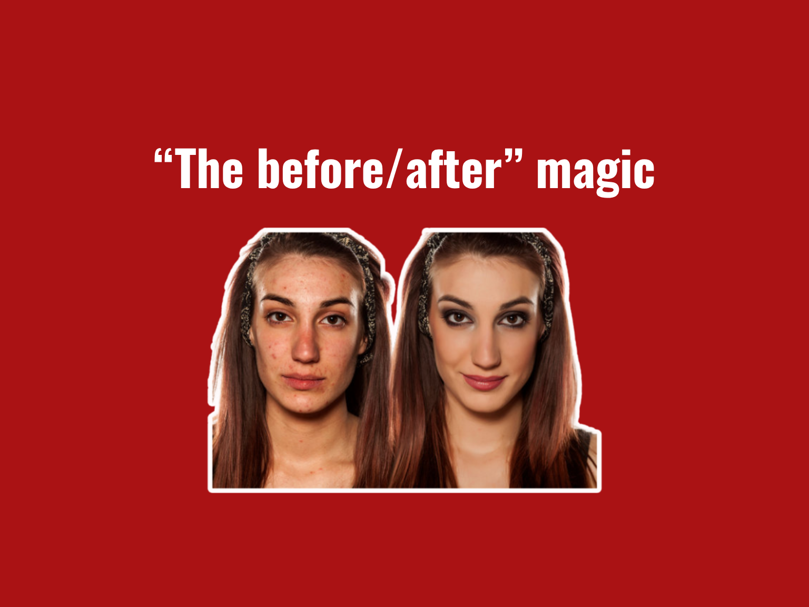

For nine years, my job was to make the after photo look better than real life.
I lit it, I styled it, and yes, I retouched it. The before and after is the most trusted image in all of beauty, and it is also the most manufactured. Once you understand how one gets built, you can never quite unsee it.
So let me show you the machine behind the magic, station by station.
The Lighting Is the Whole Trick
Before we talk about any product, understand that the single most powerful tool in a transformation photo is not the serum or the treatment. It is the lighting.
Flat, harsh light from above is deeply unflattering. It flattens hair, exaggerates every stray strand, and drains the shine right out. Soft, directional light from the side does the exact opposite. It builds depth, catches shine, and makes the same head of hair look thicker and healthier.
In a huge number of before and afters, nothing changed except where the lamp was standing. I have made hair look thirty percent fuller by moving a single light, with no product anywhere in the room.
The "Before" Is Sabotaged on Purpose
Here is the part nobody admits. The before is not a neutral starting point. It is often quietly sabotaged. It gets photographed:
- Under harsh overhead light
- With the hair unwashed or deliberately left unstyled
- In a flat, slightly slumped posture
- Sometimes with a tired expression
- Usually with no makeup, so the whole face reads more worn out
The after is then handed everything the before was denied. Clean and styled hair, beautiful light, a lifted chin, a touch of makeup, a real smile. You are told you are watching one variable change. You are actually watching about ten change at once.
Wet Versus Dry, and the Fifteen-Minute Blowout
A few cheap tricks show up over and over once you know to look for them.
Hair looks dramatically fuller when it is dry and styled than when it is wet and slicked down, so guess which state the before tends to be in. A camera held slightly above makes hair look thinner at the part, while slightly below makes it look fuller, so the angle quietly drifts between the two shots. And a proper blowout with a round brush and a little product adds visible volume to almost anyone in about fifteen minutes.
None of that is the product working. That is a stylist working, and then leaving the frame.
Then It Reaches My Old Chair
After the shoot comes the edit, which was my job. Even campaigns proudly labeled unretouched are usually still color corrected, brightened, and sharpened, and that alone makes hair look glossier and denser.
Plenty of images go much further. I have added strands along a hairline, filled in a thin part, boosted shine, and evened out color entirely in software, on pictures that were later sold to you as proof that something worked.
The uncomfortable truth is that a skilled retoucher can create almost any result you can imagine on a photograph, and you would never once catch it with your eye.
Learn to Read the Fine Print
This is exactly why you should train yourself to read the tiny text. Phrases like photo retouched, results not typical, results may vary, styled with added product, or a quiet mention of extensions are not there by accident.
They are legal seatbelts, put in place by people who know full well the image is doing far more persuading than the product ever could. When a brand shows you a jaw-dropping result and then murmurs results not typical in gray six-point type, believe the small print, not the big picture.
You Are Always Shown the Best One
Remember too that you are never seeing an average. A brand will photograph dozens of people and then show you the single one who responded most dramatically, and present that outlier as the expected outcome.
Layer on photos taken months apart, at different times of day, right after a fresh cut or a fresh color, and the comparison quietly stops being a comparison at all. It becomes a highlight reel with only two frames, edited down from a much messier reality.
How to Look at One Without Being Played
So how do you read a before and after honestly?
- Check whether the lighting matches. If the after is warmer, softer, or brighter, be suspicious immediately.
- Check whether the hair is in the same state — wet or dry, styled or not.
- Look at the makeup and the expression, because a smile and a little blush sell the word healthier all on their own.
- Hunt down the fine print.
- Trust a result photographed in identical conditions, ideally by a neutral third party, far more than any glossy campaign shot in a studio that was literally built to flatter.
I am not telling you that nothing ever works. Some treatments genuinely do, and honest before and afters absolutely exist. I am telling you that the photo itself is never neutral evidence, because someone like me was standing just off camera making a decision about how much of the truth you were allowed to see.
Learn to read the image, and you quietly take that power back.